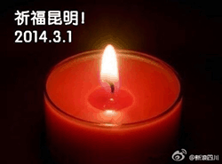

Conversation with 81184027 at Sun 02 Mar 2014 07:30:08 PM CST on 154115835 (webqq)
(07:30:14 PM) 光: 中國政局恐有劇變！ 周永康傳遭開除黨籍 2014年03月02日13:17 總 部位於美國的明鏡新聞網今早突發快訊，稱中共中央已下發《關於周永康涉嫌嚴重違紀的通報》，通報中指稱已退休的中國前政法委書記周永康，於擔任中國石油天 然氣集團、國土資源部、四川省委書記領導職務和中央政法委書記期間，嚴重違反共黨黨紀，濫用職權，犯有嚴重錯誤、負有重大責任；利用職權為他人謀利，直接 和通過家人收受他人巨額賄賂；利用職權、其子周某利用其的職務影響為他人謀利，其家人收受他人巨額財物；與多名女性發生或保持不正當性關系；違反組織人事 紀律，造成嚴重後果；涉嫌侵吞巨額國有資產；包庇和縱 容黑社會團夥犯罪。周永康的行為造成了嚴重後果，極大損害了黨和國家聲譽，在國內外產生了非常惡劣的影響，給黨和人民的事業造成了重大損失。
通報中並稱，中共中央政治局會議決定，根據有關規定，將給予周永康開除黨籍處分，並將於共黨未來將召開的十八屆四中全會上予以追認。
但此通報真實性尚無法查核，有媒體人評論認為，相關通報內容與早前落馬高官薄熙來曾被當局發布的違法違紀通告雷同，有可能為刻意假造。（大陸中心／綜合報導）
(07:30:33 PM) 光: http://www.appledaily.com.tw/realtimenews/article/international/20140302/353346/%E4%B8%AD%E5%9C%8B%E6%94%BF%E5%B1%80%E6%81%90%E6%9C%89%E5%8A%87%E8%AE%8A%EF%BC%81%E3%80%80%E5%91%A8%E6%B0%B8%E5%BA%B7%E5%82%B3%E9%81%AD%E9%96%8B%E9%99%A4%E9%BB%A8%E7%B1%8D
(07:35:16 PM) 光: 海彦 02.22.2014 香港 — 继海南省副省长冀文林2月18号被宣布调查后，又一位前周永康秘书、现任中油国际党委书记的沈定成被调查。至此，包括去年被拘的前四川文联主席郭永祥、前 中石油副总经理李华林和前四川政协主席李崇禧在内的周永康在中石油、国土资源部、四川省及公安部时的5位秘书全部落马，仅剩周永康担任政治局常委、政法委 书记时的秘书、现任河北省委书记周本顺。
据中国经营报星期六报道，同时担任中石油国际事业副总裁的沈定成春节前夕被调查，目前处于“失联”状态，而一同被调查的妻子目前已经回家。沈定成是周永康在中石油时的专职秘书，接任李华林。
另外，北京市人大近日正式免去42岁的原北京市国安局局长梁克的职务，证实海外媒体早前的有关梁克将窃听中共高层的内容非法交给周永康而被中纪委调查的报道。
同时，海外明镜网近日报道，全国政协副主席、原江西省委书记苏荣因涉及周永康案件，目前被中纪委调查，而苏荣的妻子和侄子都已因经济问题被抓。如果消息属实，苏荣将是涉周永康案被调查的中共“党和国家领导人”级别的高官。
此前，海外媒体不断报道说，中共当局可能在2月底或全国人大、政协两会前公布调查周永康。周永康若被调查治罪，将打破中共“刑不上常委”的潜规则，是习近平上台后反腐被打的“大老虎”。
(07:35:24 PM) 光: http://www.voachinese.com/content/more-former-secretaries-20140222/1857338.html
(07:35:22 PM) 埃及无雪: 手机看不了
(07:35:43 PM) 光: 墙外
(07:35:44 PM) 埃及无雪: 给拦截了
(07:36:48 PM) 光: 嗯
(07:37:01 PM) 光: 上面那个是苹果日报的新闻
(07:37:14 PM) 光: 下面这个是美国之音2月22的新闻
(07:37:20 PM) 光: 旧闻
(07:38:00 PM) 埃及无雪: 嗯，在我们薄书记出事后，就已有传闻
(07:38:52 PM) 光: 嗯
(07:39:55 PM) 埃及无雪: 我们的薄书记啊，太惨了:[:[:[
(07:40:07 PM) 埃及无雪: 好想念他啊！:[:[:[
(07:41:35 PM) 光: 周薄篡权秘备的“组阁名单” 中共十八大以后，有关前常委，政法委书记周永康家族贪腐的案情被海内外媒体广泛报导，在中共准备公布周永康案之际，周永康与薄熙来试图联手政变的详细内容也再度见诸媒体。 媒体报导称，中共当局是在2013年12月初软禁周永康时掌握政变的关键证据。据悉，周永康夫妇被软禁后，住处被查抄，专案组在众多的文书材料中，从周的私人物品中发现一份名单，上面是周薄篡权成功后可以利用的党政军人选及相关职位，也就是政变成功后的组阁意向名单。这份名单成为周永康 案政治定性的关键证据。 名单中不仅有薄熙来出任中共总书记、国家主席和中央军委主席的内容，还有：原国资委主任蒋洁敏出任国务院副总理，现任江苏省委书记罗志军出任公安部长，现任河北省委书记周本顺（原政法委秘书长）出任最高法院院长等。据称军方名单中包含了 与薄熙来相熟的几名人员。 从这份名单可以看出，周薄政权结合了周永康在政法委、中石油系统的实力派。 2012年2月6日王立军携带机密资料出逃成都美国领事馆，踢爆薄、周策划政变黑幕。2月14日，时任中共国家副主席习近平抵达美国进行为期一周的 访问。美国媒体《华盛顿自由灯塔》曝光了王立军移交美领馆材料中其有关薄熙来、周永康联手图谋发动政变、最终整垮和废掉将在中共十八大接班掌权的习近平的 计划。美国副总统拜登曾向习近平出示了薄、周政变密谋的铁证。 同年3月15日，薄熙来被免除重庆市委书记职务。4月10日，薄熙来被停止中共政治局委员职务。
(07:41:48 PM) 光: 这是轮子的消息
(07:42:28 PM) 埃及无雪: 嗯
(07:48:37 PM) 光: 中国问题评论员林和立在香港《苹果日报》发表评论文章指出，习近平在处置周永康的问题上遇到在2007年提拔他进常委的江泽民的强烈反对。理由很简单，刑 不上常委的〝潜党规〞一旦打破，下一个很可能是与周师傅关系密切，同是石油帮大佬的前国家副主席兼上海帮大员曾庆红。曾系家族除了他的儿子曾伟涉嫌贪污， 远赴澳洲避风头外，其他成员都身家丰厚。当然，上海帮教父江泽民对于他百年后谁可以〝照住〞他两个在商场长袖善舞的儿子，也颇为担心。
(07:54:21 PM) 光: 中國官方回應周永康傳聞 晦澀稱「你懂的」 更新時間 2014年3月2日, 格林尼治標準時間11:16 全國政協新聞發言人呂新華發言人呂新華還說，周六發生的昆明」暴恐案件慘無人道「。 中國全國政協十二屆二次會議周日（3月2日）舉行新聞發佈會，大會新聞發言人呂新華在回答有關前政治局常委周永康的傳聞時，晦澀對記者表示「你懂的」。 在回答香港《南華早報》記者就圍繞周永康近期出現的種種傳聞時，呂新華說：「實際上我和你一樣，從個別媒體上得到了一些信息。」 他回答說：「2013年，中紀委、監察部對31名涉嫌違法違紀的幹部進行了處理。大家也知道，有部分是部級幹部。」 「我們嚴肅查處一些黨員幹部，包括一些高級幹部一些違法違紀問題。向全社會表明，不管什麼人，不管其職務有多高，只要觸犯了黨紀國法。都要受到嚴肅的追查和嚴厲的查處。絕不是一句空話。」 呂新華最後說：「我只能回答這樣了，你懂的。」 言畢，在場的不少記者發出笑聲。 熟悉中共政治的人士分析，呂新華的回答模棱兩可，事關重大，呂新華並沒有斷然否認，或當場予以反駁，這無異於默認有關周永康腐敗並遭調查的傳聞。 《南華早報》也在隨後發表的報道中說：「中國高官首次公開暗示當局可能很快正式宣佈對周永康腐敗案的調查」。 2012年的兩會期間，時任總理溫家寶在記者招待會上嚴厲批評中共重慶市委、市政府，要求就「王立軍出逃事件」進行深刻反思並吸取教訓。 周永康周永康之子周濱成為調查對象，其本人或許是順藤摸瓜的目標。 記者會次日，即兩會結束後的第一天，中共宣佈免去薄熙來中共重慶市委書記一職，此後薄熙來從公眾視野中完全消失，直到2013年8月出庭受審。 傳聞 中國媒體近日連續發表文章，披露「神秘富商」周濱——即周永康之子。 周六，財新網報道說，「周濱夫婦及其數名親人被帶走」，「包括周濱的三叔周元青、三嬸周玲英和堂弟周峰，另外岳父黃渝生也於去年12月失去聯繫」。 此前，中國媒體報道「富商周濱疑染指北京公租房」，接著搜狐財經發表「《打虎計》周濱：以父之名」，周四（2月27日）數家媒體又轉載中國青年報的文章，分析「周濱集團形成原因」。 眾多文章揭露的是「富商周濱」，唯一沒有點破的是，周濱是中共曾經的權力核心人物，中共政治局常委周永康之子。 即便如此，有分析人士指出，雖未點名周永康，但將矛頭對凖周濱之父，說明中共高層對周永康縮小包圍圈，「只差捅破最後這一層窗戶紙了」。 中共18大後，中國領導人習近平展開的大規模反腐運動中，許多動作被認為「劍指周永康」。 路透社去年12月報道說，周永康實際上已處於軟禁狀態。《紐約時報》、《南華早報》也都援引不願透露姓名的消息來源表示周永康正面臨調查。 但由於中共內部政治的隱秘和不透明，包括BBC中文網在內的眾多媒體難以核實有關「周永康被調查或被軟禁」的種種報道和傳聞。 果真如此，周永康將是中共建政以來因貪腐面臨調查的最高級別官員。 此前，包括所謂「四川幫」的前四川省高官李春城、郭永祥和李崇禧，「中油幫」的高官蔣潔敏、王永春、李華林等人以及曾在不同時期擔任過周永康秘書的所謂「秘書幫」，如海南省原副省長冀文林等人都被調查或免職。 另一四川富商劉漢2月20日被檢察機關正式檢控起訴，劉漢被指在「遇到貴人後」飛黃騰達，並與周濱之間有利益輸送，這或許可將劉漢和周永康聯繫起來，預示官商勾結的黑幕。 （撰稿：高毅 責編：路西）
(07:54:32 PM) 光: http://www.bbc.co.uk/zhongwen/trad/china/2014/03/140302_cppcc_zhouyongkang_spokesman.shtml
(07:57:01 PM) 光: 想看懂中国，不翻墙行么
(07:57:34 PM) 埃及无雪: 是啊，没有办法，管的死死的
(07:57:43 PM) 光: 傳神秘商人周濱及其數名親人被帶走調查 2014-03-01 19:49:40|來源：大公財經|我要分享 字體 0 頂級石油商人、神秘商人周濱已於去年12月初從自己在首都機場附近的別墅中被警察帶走。同時被帶走的還包括他43歲的妻子、持美國護照的黃婉。 大公財經3月1日綜合消息 山西省呂梁市委副書記丁雪峰涉嫌買官被免職，牽連其中的包括李東生、周濱等人。另據報道，富商周濱疑染指北京公租房，被曝有強大政府資源。而據最新的消息稱，神秘商人周濱及其數名親人被帶走調查。 周濱已於去年12月初從自己在首都機場附近的別墅中被警察帶走。同時被帶走的還包括他43歲的妻子、持美國護照的黃婉。據財新記者所知，周濱的嶽父黃渝生也同期失去聯係，周濱的三叔周元青、三嬸周玲英和堂弟周峰去年12月被帶往北京。 因是神秘商人、頂級石油商人，網上有關周濱的公開資料廖廖無幾。 周濱個人簡曆 周濱（北京中旭陽光能源科技股份公司原董事長） 周濱，男，漢族，北京中旭陽光能源科技股份公司原董事長。 畢業於四川省的西南石油大學。 因中石油腐敗案出名。 2013年9月27日，北京市朝陽區阜通東大街6號院一號樓5層606室，北京中旭陽光能源科技股份有限公司(下稱北京中旭能科)股東大會召 開。參加會議的股東只有兩人，周濱和南辛。會議決議：免去詹敏利監事職務，選舉徐波萍為監事。在股東大會決議書上，周濱簽下了自己的名字。
(07:57:54 PM) 光: http://finance.takungpao.com.hk/gscy/q/2014/0301/2314366.html
(07:58:35 PM) （）: 自言自语嘛
(07:59:21 PM) 光: 中青報：周濱背後利益集團是如何形成的 02 - 27 09:26 北京新浪網 朱達志 這幾天，一個叫周濱的富商的腐敗故事，十分地引人注目。眼下，“反腐敗”可謂如火如荼。毫無疑問，它已融入了當下中國社會與政治生活的主旋律。但別忘了還有一個熱詞，那就是“全面深化改革”，它才是主旋律中的最強音。 在經歷了三十多年的改革開放後，我們摸著石頭走進了改革的“深水區”──所有的“帕累托改進”已經實現，進一步的深化改革，再也不是“只有受益人而沒有 受損人”的“皆大歡喜式改革”了，一只巨大的老虎橫亙在我們的面前，那就是既得利益的“固化藩籬”形成的強有力障礙。“全面深化改革”與“社會矛盾累積” 之間，儼然已是“兩只老虎的賽跑”，孰快孰慢，將決定國家的前途和民族的命運，以及“中國夢”的成敗。 十八大尤其是十八屆三中全會以 來，習近平等中央高層領導，在不同的場合多次強調全面深化改革的意義和著力點。其實，早在2012年12月的廣東考察中，習近平就罕見地強調：改革開放是 實現中華民族偉大複興的關鍵一招，要堅持改革開放正確方向，敢於啃硬骨頭，敢於涉險灘，既勇於衝破思想觀念的障礙，又勇於突破利益固化的藩籬。 “利益固化的藩籬”，說白了就是既得利益集團已足夠強大。那麼，這“藩籬”是怎麼形成的呢？現在看來，它是市場化改革不徹底的產物。前三十多年的改革， 理論上說是“帕累托式改革”，即幾乎所有人都從改革中受了益、獲了利。但這樣的受益和獲利，卻是“不同程度”的。由於經濟運行中存在著“雙軌制”，存在著 明顯的政府幹預，存在著不適當的行政性壟斷等等，總有些人“近水樓台先得月”，形成既得利益集團；而這些因素的存在，使得“得月”的過程，充滿了腐敗。 從這個角度上說，政府的不適當管理和幹預，即市場化改革的不徹底，是形成既得利益集團的背後因素。而反腐敗根本而言並不是目的，目的是要為全面深化改革 掃清障礙，厘清政府和市場的關系，完善市場經濟體制，使市場在資源配置中起決定性作用。唯有如此，才能從根本上杜絕制度性腐敗。政府自覺地從資源配置的決 定者身份中退出，可謂真正的刮骨療毒、壯士斷腕。 昨日，《公租房撂荒背後隱現周濱“白手套”》（《新京報》2月26日）的報道，迅速成 為各大網站轉載的重點報道。我注意到，人民網在轉載該報道時，將標題改為“富商周濱疑染指北京公租房 被曝有強大政府資源”。嚴格說這並不是標題黨的做法，因為報道引用業內人士的話說，“在房產界活躍著一些小公司，他們有強大的政府資源，能獲得地產項目， 但他們並不開發，而轉手給專業的房產公司，從中獲利頗豐”；而周濱及他的“白手套”所控制的“小公司”，正是“南口農場NC-01街區公租房”這個“北京 重點保障房建設的重點項目”的土地擁有者。 重點公租房項目撂荒當然有多個原因。表面上看，富商周濱通過其“強大的政府資源”拿了這塊寶 地去轉手獲取暴利，其腐敗的性質是不言而喻的。但周濱得以腐敗成功，則是緣於他有個“先得月”的“近水樓台”；“樓台”上方，則撐著一把行政權力對經濟生 活，尤其是資源配置強力幹預的保護傘。 這才是問題的實質。全面深化改革，最需改也是最難改的，正在於此。（原標題：周濱背後的利益集團是如何形成的）(內容由新浪北京提供。未經授權，不得轉載。)
(07:59:30 PM) 光: http://news.sina.com.hk/news/20140227/-9-3200071/1.html
(08:01:06 PM) 光: 由於經濟運行中存在著“雙軌制”，存在著明顯的政府幹預，存在著不適當的行政性壟斷等等，總有些人“近水樓台先得月”，形成既得利益集團；而這些因素的存在，使得“得月”的過程，充滿了腐敗。
(08:03:52 PM) 光: 周滨的三只“白手套” 2014年1月30日 17:51 来源:财新网 作者:高昱 于宁 王端 黄凯茜 胡格 王晓庆 李雪娜 吴静 选稿:郑闻文 原标题: 周滨的三只“白手套” 中石油和四川系列腐败案中，周滨通过其代理人获得巨额商业利益 周道第一期，今天我们要说的是白手套。 今天要说的白手套，就是指替别人把“黑钱”漂白，替别人打掩护的人。 那今天我们要说的是谁的白手套，是一个叫周滨的人的白手套。这些白手套都做了一些什么样的事，它都和中石油还有四川的系列腐败案有关。 第一只白手套，拉古娜海滩的黄家。 拉古娜海滩在什么地方呢，在美国加利福尼亚州的海边，风景非常漂亮。而且在拉古娜海滩的旁边，还有一个专门适合养老的城镇。里面有老年社区，有医院，高尔夫球场，还有什么艺术画廊等等等等。 在这里就生活着一个老爷子，叫黄渝生。他的太太叫詹敏利，大家一定要记住这三个字，詹敏利，接下来她会在我们要讲的故事中持续出现。 黄渝生的女儿叫什么呢，叫黄婉。在十五六岁的时候，就跟随爹妈到了美国，先是读高中，后来移居到得克萨斯。在这儿，遇到了后来白手套里面的那只手，周滨。 周滨毕业于西南石油大学。1993年，21岁周滨来到德克萨斯，干什么呢，继续学习攻读石油勘探方面的专业。 2000年前后的时候，（周滨和黄婉）两个人回到了国内，在北京定居。就此，围绕着周滨和他的白手套的故事，在中石油系统，频频出手。 第一个公司，2004年的时候，在北京就出现了叫中旭阳光这么一个公司，大股东是谁呢，詹敏利，对就是我们一开始提到，黄渝生的太太，黄婉的妈妈，自然也就是周滨的丈母娘。 中旭阳光这个公司在成立之后做的什么生意呢，首先就是一笔大单。中石油旗下8000多个加油站零售终端的信息化的单子。不要看这8000多的数 已经很大了，而且，它的覆盖面也是非常的惊人。不仅包括中石油的黑龙江公司、吉林公司、辽宁公司、大连公司，还有中石油的北京公司、河北公司、天津公司、 山东公司、浙江公司、上海公司、陕西公司、四川公司。能够一下子渗透到这么多的中石油的分公司，拿下这么多的加油站，可见白手套和里面的那只手周滨果然不 一般。 不过，关于中旭系的故事才是刚刚开始。2013年的8月1号在北京西客站， “中旭系”的实际控制人吴兵被带走了。吴兵这个人在四川非常有名气。他做了几件事。一个是投资了房地产高速公路项目，另外在北京他从事文化产业，做了什么 呢，把我们都觉得非常晦涩非常枯燥的《资本论》做成了话剧。但是，真正让大家觉得这个人了不得的，是他做的水电站项目，因为他竟然能够从央企的口中夺食。 这个水电站在什么地方，在大渡河。大渡河水电站的开发，按照规划的话，它是归谁做呢，是归五大电力公司之一的国电来做。但就是在这里，吴兵的中 旭系拿下了一个水电站。这个水电站每年的发电量大概是在31亿千瓦时。这是什么概念，四川的发改委给他们的电价怎么定的呢，每度电的价格是0.288元。 那么如果这样算下来的话，这个水电站每年卖电的收入是9个亿。想一想，9个亿，每天从大渡河那里流过的水，那真的就不是水那是钱呢。但是，这么令人眼红的 生意，却不是什么人都能做的。 让我们来看看吴兵为什么能够拿下来。你如果看看它这个水电站投资公司的话，三个股东，第一个股东，吴兵的中旭投资，第二个股东叫四川天蕴，第三个股东叫四川天丰。股东名单上，三个字，詹敏利。依然是黄婉的妈妈，周滨的丈母娘。 如果说拉古娜海滩的黄家，他做周滨的白手套，他们是亲戚关系，那我们接下来说的第三只白手套米晓东和周滨又是什么关系呢？ 民间有个说法四大铁，一同扛过枪的，一起同过窗的。米晓东和周滨他俩就都是毕业于西南石油大学。而且，据米晓东给别人讲，他和周滨曾经是上下铺，关系当然就是非常的铁。 大学毕业后，米晓东先是去了中海油，再后来在2006年的时候米晓东到了北京，开始和周滨合伙做生意。 后来米晓东就到了陕西西安，是因为陕西西安是中石油长庆油田的总部所在地。在这儿做的是什么生意呢？做的是石油地块的买卖生意。卖给了谁，卖给了一个叫王乐天的人。 王乐天这个人，人家称他叫东北石油大亨。早在1994年的时候，他就在中石油的吉林，拿到了低价地块。当时油价比较低，拿到这样的地块也可以理解。非常让人觉得神奇的是，在2008年的时候，油价已经开始飙涨。 就是2007年年初的时候，一桶油60美元，到了2007年年底的时候，已经涨到100美元，这个时候，谁能拿到地，谁就等于数钱。这个时候作为一个民营企业家，王乐天还能拿到油田的地，大家都觉得，这个人神通广大。 但实际上，神通广大的不是王乐天。因为王乐天他是通过买了一个公司，叫陕西德淦。他买到的这些油田的地块，都是这个公司里面的资产。而这个公司是谁的，它的大股东又是我们非常熟悉的那个人，三个字，詹敏利。 米晓东就在陕西这块打理周滨油田买卖的业务。他们在陕西德淦这个公司成立之后，花了千万元拿到批文，就有了这样一些油区的地块。然后就要倒手。 先是找到了一个国企的上市公司，国企上市公司拿到地一看，地也一般，然后一看报价是3.8亿，就说算了，那我们不要了。再后来，有一次米晓东在生意上就碰 到了王乐天，就把他们手里的这些地块拿给王乐天的团队看。王乐天的团队一看，油品质量一般，而且价格也不低。为什么说价格不低，因为这个时候米晓东的报价 已经从3.8亿到了5亿。但是最后王乐天他们做了一个衡量，尽管这个地这个油区不是很富，但是自己现在的油区储备比较少，还是接下来吧。就这样，拿到这个 项目批文，花了千万元，然后一倒手，5个亿。这真是一个大生意。 不过关于周滨的白手套的生意就这么结束了吗？没有。在2013年的8月份开始，围绕着中石油和四川系列腐败案的反腐工作已经开始了。从四川省委 副书记李春城还有中石油的好几个高管，包括中石油前董事长都开始落马接受调查。这个调查还在进行过程当中，或许，真的会有“大老虎”落网。我们拭目以待。
(08:03:58 PM) 埃及无雪: 嗯
(08:04:07 PM) 光: http://finance.eastday.com/m/20140130/u1a7916157.html
(08:09:51 PM) 光: 曝詹敏利商業網 女婿周濱遭起底
http://news.wenweipo.com [2014-01-26] 我要評論(5) http://image.wenweipo.com/homepage/bigger.gif放大圖片 http://image.wenweipo.com/2014/01/26/20140126ws0001.jpg【文 匯網訊】據中國經營網報道，2013年9月27日，北京市朝陽區阜通東大街6號院一號樓5層606室，北京中旭陽光能源科技股份有限公司(下稱北京中旭能 科)股東大會召開。參加會議的股東只有兩人，周濱和南辛。會議決議：免去詹敏利監事職務，選舉徐波萍為監事，現公司監事會由南辛、鄧福佐、徐波萍組成。在 股東大會決議書上，周濱簽下了自己的名字。 目前，中旭能科董事長、總經理名叫閆俊。也正是在這次股東大會上，周濱的妻子黃婉被免去董事長職務。 詹敏利生於1942年，是周濱岳母，她的丈夫便是新中國著名地質學家黃汲清之子黃渝生。二人育有一女名為黃婉， 後嫁與周濱。《中國經營報》記者調查發現，詹敏利名下擁有多套房產，其任職的多家公司亦與周濱多有交集。而在2013年9月27日完成了北京中旭能科股東 大會的相關事宜之後，在與周濱和詹敏利相關的公司法律程序和文件中，周濱便再也沒有出現。 2002年，時年60歲的詹敏利在國內創立了有資可查的第一家公司，開始十餘年的商海人生。然而，去年中石油系列腐敗案爆發之後，詹敏利及其所在公司陷入了重重迷霧。 岳母「出山」 詹敏利在北京市工商局登記註冊並擔任法人或者擔任過主要股東的公司至少有九家，涉及能源、物業管理、投資顧問等多項業務。 被譽為「一代宗師、地學泰斗」的著名地質學家黃汲清，在新中國石油系統有「中國石油之父」之稱，是發現大慶油田 的功臣。周濱是這位學界泰斗的孫女婿。據之前財新網報道和本報記者多方瞭解，周濱1972年1月出生，他的妻子名叫黃婉，其岳父正是黃汲清之子黃渝生，岳 母是1942年出生的詹敏利。 上世紀80年代就移居美國的黃渝生夫婦，在國內的投資主要是通過詹敏利旗下公司來運作。 詹敏利在北京市工商局登記註冊並擔任法人或者擔任過主要股東的公司至少有九家，涉及能源、物業管理、投資顧問等 多項業務。這些公司具體包括，北京威儀物業管理有限責任公司、北京浩盛益佳投資管理有限公司、北京海天永豐石油銷售有限公司、北京中旭能科、北京匯盛陽光 投資管理有限公司、北京中旭陽光科技發展有限公司、北京海斯科投資顧問有限公司、北京廣隆嘉潤投資顧問有限公司、北京建興光澤投資管理有限公司。 目前北京海斯科投資顧問有限公司、北京廣隆嘉潤投資顧問有限公司、北京中旭陽光科技發展有限公司、北京海天永豐石油銷售有限公司等四家公司已經註銷。 其餘公司仍由詹敏利等人實際控制，繼續保持開業狀態。 選擇購買位於北京市阜通東大街6號院方恆國際中心的房產作為辦公地點，是詹敏利投資生涯的重要一筆。 記者調查發現，詹敏利在阜通東大街6號1號樓(寫字樓)持有的房產至少有8套，建築面積972.6平方米。這些 房產的產權證登記冊上，房屋所有權人為詹敏利，登記時間為2009年9月19日。開發該物業的北京方恆置業股份有限公司工作人員告訴記者，該樓盤於 2007年開盤，當時單價2萬多元，目前二手房單價6萬元左右。 此外，詹敏利將這些房產悉數作為了旗下公司的辦公場所，周濱曾擔任董事長的北京中旭能科亦在此。 中旭系交集 周濱任職董事長期間，北京中旭陽光能源科技股份公司與中石油的合作更為緊密。 詹敏利前期註冊的公司中，已經落馬被調查的四川富商吳兵擁有的中旭系多有交集。 北京海斯科投資有限公司在2002年6月6日註冊成立，註冊資金10萬元，詹敏利出資8萬元，崔利群出資2萬 元。而在大洋彼岸的美國，黃渝生夫婦1992年在新澤西州伊弗珊鄉馬爾頓地區註冊成立了海斯科公司(Hysco Corporation)。北京海斯科存在的時間並不長，2004年11月即被吊銷。 此外，北京廣隆嘉潤投資顧問有限公司則在2003年4月15日成立，註冊資金100萬元，詹敏利出資80萬元，趙明出資20萬元。註冊地為北京市朝陽區北苑路168號中安盛業大廈(住宅)樓1502室。該公司在2009年2月6日註銷。 北京廣隆嘉潤投資顧問有限公司註冊4個月之後，詹敏利又組建了一家新公司。2003年8月13日，北京中旭陽光 科技發展有限公司成立。註冊資金100萬元，其中詹敏利投資80萬元，南辛投資20萬元。該公司的總經理一度由趙明擔任，公司業務為技術開發、技術咨詢、 數據網絡和系統集成等。2006年2月8日，該公司召開第二屆股東大會，決定註銷該公司。 公開信息顯示，四川大渡河龍頭石水力發電有限公司系由詹敏利曾經占57%股份的四川天豐水利資源開發有限公司與中旭投資有限公司、四川蘊和水利開發有限公司聯合組建。 擁有豐富水電資源的四川在2000年以後，進入了開發高潮，各路資本和勢力都在覬覦四川的水電項目。 四川水電之外，拓展各種資源豐富的石油領域依然是詹敏利「名下」公司的重點。2004年4月20日，北京中旭陽 光石油天然氣科技有限公司成立。該公司註冊資金500萬元。股東為詹敏利和趙明，其中詹敏利出資400萬元，趙明出資100萬元。該公司隨後也遷址中安盛 業大廈1501室，與中旭陽光科技發展有限公司和廣匯嘉潤為鄰。2010年2月，更名為北京中旭陽光能源科技股份公司，註冊資本金也在此前變更為2000 萬元，詹敏利出資1600萬元，趙明出資400萬元。 2009年是該公司股東變更極為頻繁的一年。2009年6月，股東由詹敏利、趙明變更為鄧福佐和路寧龍。兩個月 後，股東又變更為詹敏利和南辛，詹敏利和南辛各出資1600萬元和400萬元。通過這一變更之後，2009年12月，該公司股東由南辛、詹敏利又變更為南 辛和周濱。周濱由此正式接掌岳母的公司。 到了2010年初，該公司又更改為股份公司，此次淨資產評估為3259.46萬元，註冊資本金調整為3000萬 元，周濱認購2400萬元，南辛600萬元，周濱出任董事長。而在董事會成員中，黃渝生也第一次出現。此時，董事會成員中，還出現了四川天豐水利資源開發 有限公司的股東之一朱莉萍。公開的信息顯示，四川天豐水利資源開發有限公司中詹敏利和朱莉萍均為股東。 周濱任職董事長期間，北京中旭陽光能源科技股份公司與中石油的合作更為緊密。這家雄心勃勃的公司曾公開披露，拿 下了8000座加油站零售加油站管理系統項目。在此之外，該公司還滲透到中石油成品油物流配送系統、工程項目管理系統及信息系統管理等信息化項目。 2011年年檢資料顯示，2011年末該公司總資產1.39億元，收入1.3億元，淨利2468萬元。 2012年12月，周濱的妻子黃婉也成為了公司高管。同年12月10日，在阜通東大街6號院1號樓5層606室，周濱、趙明、閆俊、李春誼等六位董事決定免去周濱董事長職務、選舉黃婉為董事長。至此，周濱夫婦與詹敏利夫婦齊聚北京中旭能科。 然而，形勢正在發生微妙的變化。2012年3月21日，中石油崑崙利用總經理陶玉春已經被中紀委會同有關部門控 制。2013年8月1日，與周濱、詹敏利合作密切的吳兵被有關部門控制。2013年8月底，周濱的同門師兄中石油高層李華林、冉新權、王道富也因涉嫌嚴重 違紀，接受組織調查。 2013年9月27日的股東會後，周濱再未在該公司的會議中出現。目前，該公司股東依然是周濱和南辛，但是董事會成員中已經沒有了詹敏利、黃渝生、黃婉、周濱。 「助手」米曉東 隨著中石油腐敗案波及面越來越廣，71歲的詹敏利也停止了擴張步伐。 周濱及其岳母詹敏利旗下公司與吳兵形成交集之外，周濱的大學同學米曉東也是一位重要人物。 1970年5月出生的米曉東是石油子弟，其西南石油大學畢業後長期在中海油系統工作。2007年，已經離職的米 曉東在西安設立了秋海汲清石油科技有限公司(以下簡稱「秋海汲清」)。與大慶油田共同位列第一梯隊的中石油長慶油田，總部就設在西安。時任總經理正是周濱 的師兄王道富。2008年5月，周濱的另一位師兄冉新權接任了王道富的總經理一職。 微妙的是，「秋海汲清」與黃汲清「兩字」重合，但目前尚未有證據顯示兩者存在關聯，但秋海汲清在北京的辦事處，恰設在詹敏利所有的房產之中。 秋海汲清北京辦事處位於北京市朝陽區望京新城B區6-10號地A辦公樓5層603室。記者查閱方恆國際中心的詳細地塊信息獲知，望京新城B區6-10號地A辦公樓其實就是北京市朝陽區阜通東大街6號院1號樓。5層603室恰恰也是詹敏利所持有的房產。 公開信息顯示，該公司股東為米曉東和陳剛，其中陳剛在2003年11月28日成立的北京海天永豐石油銷售有限公 司中擔任過總經理。工商登記資料顯示，北京海天永豐石油銷售有限公司，由詹敏利出資350萬元，徐祥玲出資150萬元成立。該公司經營範圍為銷售汽油、柴 油、煤油、石油氣等。 北京海天永豐石油銷售有限公司在2007年12月全資設立陝西德淦石油公司，陝西德淦石油獲得了長慶油田一些油氣區塊。 2010年，米曉東與詹敏利成立了北京匯盛陽光投資管理有限公司、北京威儀物業管理有限責任公司、北京浩盛益佳投資管理有限公司等3家公司。 2010年3月31日，北京匯盛陽光投資管理有限公司成立，註冊資金1800萬元。詹敏利出資1620萬元，米曉東出資180萬元，法人代表由米曉東擔任。其經營範圍為項目投資;投資管理;投資咨詢;企業管理咨詢;企業策劃;市場調查;公共關係服務等。 2010年8月5日，北京威儀物業管理有限責任公司註冊成立，註冊資金500萬美元。該公司由香港註冊的永惠發 展有限公司出資成立，法人代表和董事長由詹敏利擔任，米曉東出任董事。此前一度在北京中旭陽光擔任股東的鄧福佐成為了公司監事。該公司註冊資金僅有1萬港 幣，董事和法人代表為米曉東。北京威儀物業管理有限責任公司最初的註冊地址，正是此前米曉東註冊秋海汲清北京辦事處所在地：北京市朝陽區阜通東大街6號院 1號樓5層603室。該處房產的產權人系詹敏利。 成立這家外資公司之外，詹敏利和米曉東還在2010年11月9日註冊成立了北京浩盛益佳投資管理有限公司。公司 註冊資金達到了2000萬元，詹敏利出資1800萬元，米曉東出資200萬元，法人代表為米曉東。公司的經營範圍為投資管理;項目投資;投資咨詢;企業管 理咨詢;企業策劃;市場調查。 2011年7月7日，註冊資金1000萬元的北京建興光澤投資管理有限公司成立，詹敏利出資800萬元，米曉東 出資200萬元。該公司的經營範圍，與北京匯盛陽光投資管理有限公司、北京浩盛益佳投資管理有限公司的經營範圍基本一致。而且，四家公司的註冊地址目前都 設在了北京市朝陽區來廣營鄉奶白路3號，位於該處的101、102、103、201室。記者瞭解到，這些物業的產權人為朝陽區來廣營鄉新生村經濟合作社。 詹敏利與米曉東在北京奮力織網之時，留在陝西的兩個公司也逐步變更。2009年5月，秋海汲清股東陳剛退出，將 其股權轉讓給了張效達和王源源，張效達和王源源各持有100萬元和800萬元股份。此後，米曉東的100萬股權也轉讓給王源源。2012年6月26日，王 源源的900萬元股權轉讓給王樂天，自此秋海汲清的股東變為王樂天和張效達。 公開消息顯示，2008年5月，王樂天以收購陝西德淦石油公司全部股權的方式獲得了其旗下的陝北長慶地區的一些 石油區塊。隨後通過收購陝西秋海汲清公司也獲得了一些石油區塊，目前德淦公司區塊年產量有7萬餘噸，秋海汲清公司區塊年產量不足20萬噸。對於這一系列交 易，近日王樂天致信某媒體聲稱：「不存在利用關係和權錢交易。」 但是，在中石油弊案被查後，71歲的詹敏利擴張步伐突然停止。詹敏利最後一次露面是在2012年10月8日，詹 敏利與黃渝生夫婦來到了黃汲清出生地四川仁壽，得到了當地政府官員的熱情接見。黃渝生還激動地表示：「盡自己的責任，挖掘父親的寶貴精神財富，造福仁壽教 育事業。」 在此之後，詹敏利再未在公眾場合露面。在調查詹敏利旗下多家公司中，發現了一個奇怪的現象。詹敏利征戰十餘年，簽署了許多文件，然而其在最近幾年的文件簽名上與前期有一定的差異。甚至在十分重要的股權轉讓等重要文件上，其簽名與前期也有細微差異。 對於詹敏利和周濱，仍有太多謎團待解。
(08:10:11 PM) 光: http://news.wenweipo.com/2014/01/26/IN1401260026.htm
(08:27:31 PM) 光: 直击周永康之子周滨身涉三大腐败脉络图 近来，周滨成为各大媒体关注的焦点人物。周滨，何许人也？公开资料显示，周滨的父亲为中共前政治局常委周永康本就引人关注，而中石油腐败、四川官商地震、秘书帮集体沦陷等事件也少不了周滨的身影，这也更加让外界浮想联翩。
eb0add1697924927c5096eb964177a69
周滨是刘汉的“贵人”。近来，随着四川富豪刘汉集团2014年2月20日被提起公诉，四川官商地震余波再次袭来之际，周滨也出现在报端。媒体披露，周滨是 刘汉愿意斥巨资攀附的“贵人”。刘汉为示好不惜高价向周滨买项目，还曾花费25万（1元人民币约合0.1653美元）让女艺人陪朋友过夜。至于刘汉牵出的 胡耀邦家人，以及与北京高官的勾连，在香港媒体刮过一阵风后便偃旗息鼓。
d43eca53f9bf99022fbd0ab4d949fdb0
周滨身涉中石油腐败窝案。在刘汉之前，被视为周永康心腹的冀文林2014年2月18日落马，周滨的名字也频繁见于报端，或与海南的石油项目脱不开干系。对 于两者的“交集”，大陆媒体也集体有意识地采取了含糊其辞的表述。《21世纪经济报道》在描述冀文林的升迁史时，略去了“国土资源部部长”、“这位领导” 的名字。陆媒为“自保”没有道明的“这位领导”，正是坊间热烈讨论、被当局定为“一号专案”的主角周永康。
f8c21988f52169552d9b6415cc8db64c
周滨学生时代已注定与石油关系颇深。周滨今年42岁，1972年1月出生。出生那年，他的父亲周永康还在辽河石油会战指挥部工作，这也注定了周滨一生与石油、能源结缘。自西南石油大学本科毕业后，在美国得州一所大学攻读石油相关专业的研究生学位。
周滨和“保姆”李华林。周滨被公开点名后，每次牵扯四川、石油系统、政法系的官员或商人落马，总有他的名字混在其中。如曾担任周永康秘书的中石油副总经理 李华林，不仅一手安排了“神秘人士”周斌（此周斌被指为周滨）就读西南石油大学，而在其前往美国之后，更是成为照顾他的“保姆”，形同家奴。
78053ae8874c64eeb1c96a80613f9141
周滨和好兄弟米晓东。1970年5月出生的米晓东，比周滨大两岁，是老海油子弟，米晓东在湛江的南海西部公司家属院长大，其父曾在新疆的中石油油田工作， 中海油成立后调至南海西部公司任副总经理，颇有威望，已退休多年。在西南石油大学期间，周滨学的是科技英语专科，米晓东则应该在储运系。
3caf94e131553153a45faebe808d61bb
周滨与铁哥们吴兵。周滨的公开身份是“北京中旭阳光能源科技股份有限公司（2009年12月成立）原董事长”。而2001年四川商人吴兵成立中旭投资有限 公司。这也慢慢铺开了颇为令人瞩目的“中旭系”。周滨和吴兵的生意就渗透到利润更为丰厚的石油行业，那个高度封闭的行业十分仰仗关系，而周滨最不缺的就是 关系。虽然周父调任四川，但周家在石油系统的势力已然根深蒂固，中石油上下都是周父的属下，周滨等待的是时机以及站在台前的“白手套”。中旭阳光只是周滨 夫妇投资的公司之一，周滨也经常辗转于香港等地，料理其他生意。
6dc00c913849c43cf49fba8ea4b5f3df
周滨事涉山西买官案。2月20日，山西省吕梁市副厅级以下领导干部会议宣布免去吕梁落马市长丁雪峰职务。24日，《中国经营报》对山西“失联”进行报道， 该报援引接近案件的知情人士说法，丁雪峰被免职系两年前买官案发，其中部分与公安部原副部长李东生案牵连，周滨等人也牵涉其中。买官运作时间发生在 2012年1月。彼时，周滨背后的“大靠山”还大权在握。
8531f9ed57d850d7c6369bc987f8a4db
周滨的岳父岳母。山西买官案还不算，揭开丁雪峰买官面纱的《中国经营报》，于同一天再发重磅消息——《傀儡富豪吴兵背后利益链渐清晰：周姓家庭曝光》。文 章在导言部分即将所有猛料倾斜而出，周姓家庭成员，包括白手套吴兵、吴兵身后裹藏的神秘女人詹敏利，以及詹敏利的丈夫黄渝生、女儿黄婉以及女婿周滨都在这 条隐秘的商业链条中悉数登场。在美国期间，周滨同黄渝生的女儿黄婉已有接触，2000年后，周滨和黄婉的住址都变为黄婉家人所居住的新泽西州。当时，周滨 与黄婉已经将重心转移到中国，经常居住在北京。周滨回到中国后曾在全球知名的油田服务公司斯伦贝谢供职，2003年前后就拥有自己创办的公司。
41579a8b2a67d2c96f9054acd965ae0e
周滨与中石油腐败关系颇深。早在2013年9月25日，财新网就首次披露了周滨及岳父全家在中石油系统的腐败行为，但使用的此“斌”而非彼“滨”，报道发 出不久随即被删除。诡异的是，风声一过，被勒令灭迹的特稿再度复活——周滨与岳母空手套白狼。2013年11月22日，财新网再发特稿，披露同年8月底中 共“主动”掀起的中石油系统反腐风暴，包括中海油也难逃反腐清查。文中不仅直接点名周滨涉嫌以不正当手段获取高额利益，为特稿绘制的关系图中，周永康名字 更是赫然在目，岳母詹敏利以及白手套米晓东、吴兵也牵涉其中。
e77b19fa73a57289e5bc7550c5e0e968
周滨牵涉公租房。仅两天之隔，《新京报》便成为接力者，还是紧紧揪着周滨不放，焦点也从石油转向了北京的公租房。工商资料显示，承建此两千余套公租房的投 资公司“秋海旭荣”，最初的法人代表是米晓东，由于“昀滢旭荣”是“秋海旭荣”的控股公司，也就成了公租房项目的主要承接方。值得一提的是，“昀滢旭荣” 的两名出资人均和周滨有关，“铁哥们儿”米晓东出资200万元（1元人民币约合0.16美元），岳母詹敏利出资1,800万。众媒体在转引时突出显示了周 滨的政府背景，“他们有强大的政府资源，能获得地产项目，但他们并不开发，而转手给专业的房产公司，从中获利颇丰。此处意有所指的“政府背景”，放在周滨 身上，基本上等同于直接指向了其父周永康。
(08:30:00 PM) 埃及无雪: 腐败啊
(08:30:44 PM) 心成长-辽宁: 成长(278730240) 20:19:12
祈愿天下无灾！世界和平！人类平等、健康、幸福！

祈祷昆明人民平安！
[祈祷]
(08:31:00 PM) 福建-福州&水浒: 该
(08:33:53 PM) 光: 拿下8000座加油站 “中旭系”中還包括沒有涉足石油業務的北京中旭盛世風華投資有限公司(下稱盛世風華)，此前媒體報導，其參與了影視、話劇投資。 盛世風華同樣經歷多輪股權轉讓，2009年12月成立時，盛世風華的名稱為北京中旭盛世風華文化有限公司，其股東為吳學軍和湯國英，吳學軍畢業於中國人民大學，此后留校在會計教研室任助教，1990年，吳學軍離開高校，到位於成都的中旭投資公司任總經理。 2010年9月，盛世風華的股東變成了時年79歲的龔玉清和78歲的吳從雲，兩人均為成都人。公司也改為現名，離開文化産業，成為一家投資公司。 2011年8月，盛世風華股東變為現在的吳名兵和曲愛光。兩人接收股份的對價分別為60元和40元。此時，盛世風華盡管注冊資本為5000萬元，但實繳1000萬元。 2011年11月，該公司吸收合併四川嘉仁投資有限公司，嘉仁投資公司的股東同樣是吳名兵和曲愛光，媒體報導稱嘉仁公司為吳兵所控制，合併時，其擁有資産1.14億，負債9999萬。盛世風華實收2000萬元，併入其資本金。 這一年，盛世風華還出資1億元，反向100%控股中旭投資有限公司。原本誕生於成都的中旭投資公司將資本陣地轉移至北京。 盛世風華現任法定代表人為王志強，其長年任職於水電行業，曾在水電部七局成都辦事處任書記，並於2002年進入中旭投資公司任副董事長。王志強曾對《經濟觀察報》記者稱，“自己只是職業經理人，名義上的法定代表人，並不持有公司股份，不清楚吳兵目前的情況。” “中旭系”中只有中旭能科獲得了中石油大單。本報得到的資料顯示，2009年，中旭能科營收1.09億，利潤1000余萬元，2010年，營收 1.16億，利潤2822萬元，2011年，該公司營收超過1.3億，利潤達3291萬元。也是在這一年，中旭能科位居中石油“電子工業産品”類供應商之 首。 本報得到的一份中旭能科改制檔案顯示，其經營對象包括遼河油田、長慶油田、吉林油田、塔裏木油田。 在中旭能科的業務中，中石油加油站管理項目佔據大塊。2004年4月中石油上市后，中旭能科成立，巧合的是，幾個月后《中國石油信息技術總體規 劃》發布，規劃包括了上游項目、下游項目、ERP項目、電子商務項目、管理信息項目在內的34個工作包。其中，加油站管理系統是下游項目的重要板塊。 該項目在2006年10月立項，隨后在華東、山東、大連啟動了30座加油站的試點。 但2007年，商務部網站發布消息稱，中石油決定為加油站安裝由以色列供應商Retalix公司提供的軟件和方案，中旭能科並不是Retalix公司的國內合作方。到2008年11月30日，這筆價值過億的項目結項。 2009年9月，中石油簽約第一批推廣的4855座加油站，12月，第二批推廣的5115座加油站簽約，第三批推廣的加油站數量則達到4600家。到2011年5月，16000座加油站完成了推廣。 一名曾短暫參與中石油加油站管理項目的業內人士稱，“這個系統非常複雜，有很多公司參與”，其中不乏HP、IBM等國際巨頭，相比之下，僅僅成立數年、工商登記只有50名員工的中旭能科顯得相形見絀。 一家名為西安賽思通電子有限公司的網站上稱，2007年，經過近三個多月的充分交流與協商，我公司以項目分包形式，與中旭能科就《中石油加油站 零售管理信息系統》試點階段達成了一致意見並簽署了相關合同。“將以合作形式，由我公司派駐該項目組的人員，參與完成整個項目建設期間的相關規劃、組織、 協調、管理任務。” 據中旭能科網站介紹，該公司負責中石油加油站管理系統約8000座加油站的具體實施與管理工作，過程涉及試點單位及所有三期的部署工作。但中石油的招投標平台“能源一號”網站上，已查詢不到具體的招投標項目。如今，中旭能科的網站也已經無法打開。
(08:36:51 PM) 光: 财新网：四川“黑老大”刘汉曾是周滨生意伙伴 字号:小中大 2014-02-20 17:50:35 更多 1028 关键字 >> 四川刘汉黑老大周滨生意伙伴投资往来西南城事 四川汉龙集团董事局主席刘汉近期因涉黑被检方提起公诉。财新网20日披露，案发前，他与商人周滨是生意伙伴，有投资往来。 湖北省咸宁市人民检察院2月20日提起公诉，指控刘汉、刘维等36人组织、领导、参加黑社会性质组织、故意杀人、包庇、纵容黑社会性质组织等犯罪。 其中，刘汉、刘维涉及15个犯罪罪名。新华社2月20日上午发布这一消息。消息指，该案于2013年4月，由公安部指定湖北侦办。 现年48岁的刘汉是商人周滨在四川的生意伙伴之一，而周滨以其深厚的背景涉足水利、石油等多个领域。 四川“黑老大”刘汉曾是周滨生意伙伴 四川“黑老大”刘汉（资料图） 对于周滨，刘汉不乏攀附心态。2003年左右，周滨以2000万元左右的价格，转让其位于四川阿坝州的一个旅游项目给刘汉旗下的公司，获利不菲。刘汉公司的一位前员工认为，该处旅游项目的地理位置并不好，价值最多只有几百万。刘汉曾对其指示，“只要不是太过分，我们就答应他。”这名员工认为，刘汉做该笔交易，只不过是为了维护他和周滨的关系。 2005年左右，汉龙集团成立了一家电力公司。四川省发改委以保护资源为由，限制刘汉公司掌握全部股权。于是，周滨应邀出面，代刘汉持有了该公司20%的股权。后来刘汉再从周滨手中回购这部分股权，但此次回购只是形式，刘汉并没有付款。 四川的不少商人对刘汉多持敬而远之态度。 在政治上，刘汉头顶多重光环。他曾是四川省商会副会长，九届四川政协委员，十届、十一届四川政协常委。他捐赠的希望小学在2008年汶川大灾中震而不倒，从此名扬天下。（财新网 记者罗洁琪）
(08:37:03 PM) 光: http://www.guancha.cn/economy/2014_02_20_207481.shtml
(08:37:48 PM) 埃及无雪: 庞大的腐败集团啊
(08:42:12 PM) 光: 傳有強大政府資源 轉手就獲利 「富商周濱染指北京房市」 [2014-02-26] http://news.singtao.ca/i/site_2009/facebook_share.jpg http://news.singtao.ca/i/site_2009/email.jpg http://news.singtao.ca/i/share_mblog_button_s.jpg 北京南口農場NC-01街區公租房曾計劃2013年竣工，但如今依然荒草 遍地。這個項目由北京秋海旭榮房地產開發公司承接。在該公司股權結構中，有米曉東的身影。米曉東被指「扮演神秘富商周濱『白手套』」的角色。」有業內人士 說，房產界活躍著一些小公司，他們有強大政府資源。 本報訊 工商資料顯示，南口農場NC-01街區公租房項目由「秋海旭榮」公司承接。米曉東，周濱大學同學，在周的商業帝國中，「扮演『白手套』」的角色，其在台前幫周打理商業事務。」《新京報》報道，南口農場辦公室的工作人員李女士說，因程式問題，公租房項目被擱置。
開工日期「出奇」早
南口農場幾年前就在進行整體規劃。規劃於2010年11月由北京規劃委批復通過。公租房是其中的一個規劃。但開工日期「出奇」得早。按照相 關規定，項目開工前的審批流程是，要在市發改委立項，要拿到市規劃委批復，國土局進行土地預審，辦理土地農轉用等手續，獲得開工證等方可施工。
2011 年9月22日，該公租房項目開工。昌平區國土分局網站上則顯示，該項目於2012年7月通過土地預審。文件顯示，該項目在2012年9月7日獲市發改委批 復。在工地看守建材的老胡說，2012年六七月份曾來過一批工人打地基，做了十來天，就停工了，「從那以後再也沒有開工。」
2013年12月24日，北京昌平區住建委就公租房「撂荒」書面答覆稱，南口農場公租房項目目前是國有農用地，正在辦理土地農轉用手續。項目將如期進行，建成後依據現行政策進行配租。但沒透露繼續開工時間。
周濱岳母曾出資
工商資料顯示，「秋海旭榮」，其最初的法人代表是米曉東。該公司成立於2009年9月24日，註冊資本為3000萬，北京昀瀅旭榮投資管理有限公司出資2400萬元，北京市南口農場出資600萬元。
由於「昀瀅旭榮」是「秋海旭榮」的控股公司，也就成了公租房項目的主要承接方。「昀瀅旭榮」的兩名出資人均和周濱有關，米曉東出資200萬，詹敏利出資1800萬。詹敏利是周濱的岳母。
米曉東、詹敏利在承接公租房項目後不到一年，即在2010年8月，通過轉讓公司股權的方式，將項目轉手給北京天恒聯信置業有限公司。
「昀瀅旭榮」的股權轉讓發生於2010年8月4日。詹敏利將「昀瀅旭榮」的1550萬股權轉讓給「天恒聯信」，另250萬股權轉讓給北京匯盛陽光投資管理有限公司。
米曉東將「昀瀅旭榮」的200萬股權轉讓給「匯盛陽光」。變更後，「天恒聯信」持有77.5%的「昀瀅旭榮」股權，於是間接控股了「秋海旭榮」，也就接手了公租房項目。「昀瀅旭榮」和「秋海旭榮」的法人代表，均變更為楊威——他是「天恒聯信」的法人代表。
事實上，無論是昀瀅旭榮，還是匯盛陽光，都不是專業房地產公司(它們是投資公司)。而「天恒聯信」是一家專門從事房地產開發的企業。
隨著股權變更，「天恒聯信」自然承接了這個土地整理項目。而在地產界有這樣一個現象：從事一級開發地產的公司，通常能優先獲得該地塊的二級開發建設權。據瞭解，「天恒聯信」在業界與萬科、保利相比，是個小房產開發公司。
有業內人士說，在房產界活躍著一些小公司，他們有強大的政府資源，能獲得地產項目，但他們並不開發，而轉手給專業的房產公司，從中獲利頗豐。
南口農場NC-01街區公租房進展 2011年9月22日 項目開工，相關領導出席了開工儀式。2012年六七月曾開工幾天。
2012年7月 北京國土局昌平分局官網顯示，通過土地預審。
2012年12月13日 北京市發改委京發改【2012】1289號文件批復。
目前 正辦理土地農轉用手續。原預計2013年竣工。
(08:42:29 PM) 光: http://news.singtao.ca/toronto/2014-02-26/china1393401817d4934490.html
(08:45:23 PM) 光: 周滨何以那么神通广大？http://douhao.bokerb.com/images/006.gif 博主：逗号 发表时间：2014-02-25 08:26:33 2月20日，山西省吕梁市原市长丁雪峰，被宣布免去党内职务和提名免去市长职务。但相关的会议，没有透露丁雪峰被免职的具体原因。 丁雪峰被带走调查的消息是1月2日传播开来的。据接近案件的知情人透露，系其2年前买官案发，并与公安部原副部长李东生案牵连，周滨等人牵涉其中。而在日前提起公诉的四川涉黑富商刘汉案件中，也出现了周滨的名字，周滨既是刘汉的生意伙伴，更被认为是成就刘汉带血产业的“贵人”，终使刘汉横行四川18年而“岿然不动”。至于已经落马的中石油副总经理李华林，更曾经“有幸”安排周滨就读西南石油大学，并成为其在美国期间的“保姆”。 这些引发广泛关注，甚至有着震撼效应的案件和人物中，都有个神秘的核心人物周滨穿梭其间，或者说周滨就是其中无形的“线”， 把这些案件和人物给串连起来，从而形成个神通广大又神秘莫测的关系网。周滨到底何许人也，能够拥有如此能耐，可以纵横政界商界，又游刃于上下左右，搅得这 个社会风生水起又不得安宁？相信这是太多的公众都迫切希望知道的，这绝不能归因于猎奇的需要，而是追求诸多问题谜底和真相的期待。 但是，在已经公开的信息中，对这个神秘人物周滨依然讳莫如深，使得公众“无缘”认识这名能量颇大的人物，这显得很不正常。而不正常的现象，只会引发更多的猜测和联想。因为在我们这样的社会话境里，如此引发广泛关注的名人而能继续“大隐隐于市”，自是有着非同寻常的地位和关系了，否则在信息化甚至还有“人肉”现象的时代，恐怕是很难做到的，除非是有着特殊关系的大人物，与权力联系起来。当然，随着诸多信息被叠加起来，这个神秘人物的“来头”，事实上已经愈加清晰和丰满，距离公开真相，也就只差一层薄薄的窗户纸了，公众完全能够心照不宣地作出合乎逻辑的推测和判断。官方所需要或者等待的，只是水到渠成、瓜熟蒂落的合适时机，而公众翘首期盼的则是“大老虎”现身。 当然，比起对周滨信息的“屏蔽”，其实更应该引发思考和反思的，则是这样的人物何以能够长期地存在，且发挥着“四两拨千斤”的作用。日前被公开的涉案金额高达1.1亿元，且涉案人员达到安徽百人之众的衡阳人大代表贿选案件，引发了高层震怒。习近平总书记更在第十八届中央纪律检查委员会第三次会议上，质问“衡阳的共产党员到哪儿去了”，而且是连声追问六个“到哪儿去了”。其实发生在四川的刘汉案件中，以及其他诸多案件中，也都应该有这样的质问。失去监督的权力，可以造成如此恶劣和严重的后果，仅有反思可真是不够了。 新闻链接http://news.163.com/14/0224/23/9LSQU7PH0001124J.html
(08:46:50 PM) 光: 山西吕梁落马市长被指"买"官 周滨曾参与运作 2014-02-24 23:00:01 来源: 中国广播网(北京) 有51509人参与 分享到 山西落马市长丁雪峰被指
接近案件人士透露，丁雪峰曾在2012年初“买”得市长。周滨曾参与运作。相关新闻：传山西吕梁市长丁雪峰被带走 疑涉李东生案据《吕梁日报》消息，2014年2月20日，山西省吕梁市召开副厅级以下领导干部会议，会议宣布免去丁雪峰吕梁市委副书记、常委、委员职务，提名免去丁雪峰吕梁市人民政府市长职务，提名董岩为市长候选人。会议没有透露丁被免职原因和丁目前具体状况。本报曾在1月25日对吕梁市长丁雪峰“失联”进行了报道。据《中国经营报》记者在当地了解，丁雪峰失联已经80多天，在此期间吕梁市内部说法是“配合调查”。对于其被调查的原因，有接近案件的知情人士透露，系其两年前买官案发，其中部分与公安部原副部长李东生案牵连，周滨等人也牵涉其中。在吕梁市委市政府官网上，丁的职务介绍和照片已撤下。“市政府领导”一栏中则没有了“市长”一职人选和介绍，放在上面的是“市委副书记董岩”简介。丁 雪峰被带走调查的消息是1月2日传播开来，而其被控制的真实时间，可能还要早一两天。吕梁本地媒体显示丁雪峰市长最后的公开活动，是2013年12月25 日听取一项新城建设工作的修改方案汇报。12月30日，吕梁市召开市委常委扩大会议，四大班子主要领导都出席，却已经没有副书记、市长丁雪峰的名字，此 后，吕梁市一些例行活动如元旦慰问等，丁再没有出现过，直到现在。据此前吕梁政府官网的介绍，丁1963年生，山西省大同市左云县人。 1981年参与工作，最早在前雁北地区工作，1988年进入山西省政府办公厅，此后，从副主任科员到副处长。1996年任中共河曲县委副书记、政府县长。 2001年到吕梁，先后任副专员、副市长、市委党委、市政府常务副市长、市委副书记等职。2012年1月9日，代理吕梁市政府市长，同年3月30日正式当 选市长。 1月9日，《中国经营报》记者曾向吕梁市新闻办提出采访关于丁雪峰的目前状况和公开说法，该办负责人告诉记者，关于这件事，他们没有任何消息，“什么都不知道”。接 近此案件的人士向《中国经营报》记者称，2012年1月，山西省多个地级市主要领导调整，吕梁市原市长张九萍调任晋城市委书记，吕梁市长一职成为部分人的 重要活动目标。时任副书记的丁雪峰，向当地多个企业实际控制人筹集资金运作吕梁市长一职。据称，周滨在此间曾参与为其运作，2012年1月9日，丁雪峰被 宣布为吕梁市代理市长。而所筹集款项，在参与中间运作的相关人之间，进行了分配。他还透露，丁雪峰事发前后，吕梁多家民营企业老板都曾被叫去谈话，核实筹资细节。
(08:47:06 PM) 光: http://news.163.com/14/0224/23/9LSQU7PH0001124J.html
(08:49:40 PM) 光: 我们能禁得住几个周滨“折腾”
⊙菁菁远山
http://www.gzslyw.com.cn/pic/?url=http://imgcdn.kdnet.net/UploadSmall/2014/02/26/139340164598341.jpg
在 中央的“拍蝇打虎”运动遍地开花之际，大家已经逐渐将目光聚焦到一个神秘商人周滨的身上。人们突然发现，不管是已经告一段落的中石油窝案，还是延宕至今的 “四川政商界地震”，都有这个“传奇人物”的神秘身影。人们看到，他不仅能影响地方政府及政法系统的权力运作，甚至有能力决定地市级官员的命运。而据《新 京报》2月26日最新的报道，周滨疑利用强大的政府资源染指北京的公租房建设，可见这位具备“超能量”的人物仍然有着说不尽的故事。但仅从已经披露出的事 实来看，能够通吃政、商、黑“三界”的周滨，其能量之大也足以震撼国人。那么在权力和“王法”双重威慑下的普通民众不禁会问：如果允许“特殊公民”存在， 那么整个国家究竟能够禁得住几个周滨“折腾”？
周滨的出现并不突兀，一些传闻和段子早就出现在互联网上，只不过这种没有经过官媒 “背书”的东西在中国的舆论环境下只能成为一种谈资而已。早在去年9月6日，大陆门户网站《新浪财经》发表名为“传某王姓人家1亿美元买设备转卖中石油挣 8亿”的报导， “周斌和王婉夫妇”就进入了人们的视线，但直到19天后财新网发布了一个特稿——《拉古娜海滩的黄家》，人们才知道“周斌和王婉夫妇”实为“周滨和黄婉夫 妇”，而周滨作为“中国石油之父”黄汲清孙女婿的身份才广为人知。最后随着财新网的接续报道，尤其是视频节目《周道》的播出，才让神秘商人周滨面目变得清 晰了一些。
今年春节之后，周滨的曝光率突然加速，冀文林的落马，刘汉“黑金帝国”的解构，吕梁市长买官案，以及《新京报》对北京 公租房建设黑幕的揭露，周滨俨然成了这一系列大剧中的“主角”，主导着整个剧情的发展。曾经呼风唤雨兴风作浪的周滨突然“失血”，一直秉持“为尊者讳”的 舆论以近乎发泄的力量释放着持久的压抑，而官方亦乐见其成，甚至于丝毫不顾忌它可能产生的负作用。在这种情况下，民众也终于有机会一窥这位恶贯满盈的“超 级权贵”的超人能量和造富过程，也让人对“汉奸”、“国贼”、“带路党”一类的词汇有了新的认识，倒是不知道那些将别人讥为“汉奸”以谄媚权力的人作何感 想。其实，祸国殃民者无一不是能够呼风唤雨的权势人物，而从目前披露出的这部分事实来看，能量如周滨“超级”人物才有资格享用这些名号，而那些因为政治理 念动辄乱扣帽子的人，他们如果不是不怀好意，就是欺软怕硬的货色罢了。
如果放在三十多年前，主流媒体如何组织语言进行“口诛笔 伐”，想必于过来人而言是不难想象的。就是在一个法治思维渐成气候的当下，如果归纳周滨的“恶行”，也丝毫用不着“上纲上线”便能随手拈来：一是腐蚀政 治。选人用人是最大的政治，但周滨却能上下其手，不仅可以主导吕梁市长的人选，而且他的马仔刘汉可以决定县级干部的去留；二是摧毁法治。刘汉的“捞人”能 力非同寻常，他能轻意将公安部调查的对象从名单中清除，可见法律于它来说仅是个工具而已；三是搞乱经济。周滨的财富究竟有多大将来也不可能公之于众，但他 造成的损失已经涉及到国家层面，不仅中石油成了他的“财富吸管”充当了“挖空中国”的主力，而且在一个政府对经济实行严格管制的社会，国家控制经济的一切 手段对他已经失效；四是贻害社会。刘汉黑社会团伙之所以能够在四川横行霸道18年之久，没有周这个“恩人”显然无法达到，从这个角度上看，周才是制造社会 混乱的源头。当然，与其造成的损失相比，周滨带来的恶劣影响和示范作用才是最大的危害，它让人们对整个体制产生强烈的不信任感，最终削弱的是政府的权威和 执政合法性，。
本月24日，四川省公安厅党委召开专题会议，反思“刘汉特大黑社会性质犯罪案”的教训。他要求全省公安机关要围绕 为“为何从警、如何做警、为谁用警”，强化制度建设，以零容忍的态度惩治害群之马。但能量大到可以安排与省领导见面的刘汉，如果他倚靠的势力没有“树倒猢 狲散”，又有哪个干警敢于动他一根毫毛？须知他当初曾强势到让县级干部“下课”的程度。因此，我们最应该反思的是权力存在的问题，否则刘汉之后还会有另一 个“强人”出现。
当言论已经随着“尊者”不再“尊贵”而无所顾忌后，周滨的所作所为才变得越来越清晰。由此我们想到，倘若“为尊 者讳”的规则早被打破，周滨也不会创造这些“神话”，而刘汉的“黑金帝国”可能早已经覆灭，那么又怎么会凭空多出这么多的罪恶？其实，关于周滨的“传说” 早就风闻于网络，随着一个个“传说”被证实，人们才认识到社会监督于他们而言丝毫不起任何作用，这才是“中国虎”往往硕大无朋的根本原因。其实，腐败是权 力的衍生物，也是世界各国共同面对的“敌人”，而唯一不同的是，在民主法治社会，由于对权力制衡和监督无所不在，从而使腐败的危害降到了最低，这也是我们 很少看到民主法治国家有“大老虎”的原因。
毋庸置疑，已经“见光”的绝非周滨犯下的所有罪恶，但仅从这些事实上看，他给国家造成 的损失也令人咋舌。其实，周滨 “作恶能量”究竟由谁“注入”，也仅差一层“窗户纸”没有捅破，想弄清真相不过是时间的问题。值得深思的是，他凭依的权势并不十分显赫，但却居然籍此在广 泛的空间和领域内兴风作浪，而且可以深入到政、商、黑“三界”，这才是最大的看点所在。这种“特殊人物”的存在，增加了整个国家在走向上的不确定性，难免 会让民众对整个国家的前途担忧。设若这样的人物不止一个，那么整个国家迟早会断送到这群败类的手上。当然，人民迟早会有觉醒的一天，但面对这些已经找好后 路的“国贼”，到时你有再大的火气也找不到发泄的对象。
显然，围绕周滨的“打虎运动”已经进入到了收尾阶段，真正的“老虎”也呼 之欲出，几无任何悬念可言。而这次“清剿”，虽然让我们看到了中央铁腕治腐的决心，但如果不从制度上思考“老虎”的成因，那么反腐败就难以突破“运动式” 的窠臼，整个国家也无法摆脱腐败的危害。从这个角度上看， “拍蝇打虎”并不是目的，如何逐步建立和营造一个官员“不想贪、不敢贪、不能贪”的制度体系和社会环境才应该是新一轮反腐败的终极目标。
(08:49:57 PM) 光: http://www.gzslyw.com.cn/content-235386-1.html
(08:52:56 PM) 光: 其实，周滨 “作恶能量”究竟由谁“注入”，也仅差一层“窗户纸”没有捅破，想弄清真相不过是时间的问题。值得深思的是，他凭依的权势并不十分显赫，但却居然籍此在广 泛的空间和领域内兴风作浪，而且可以深入到政、商、黑“三界”，这才是最大的看点所在。这种“特殊人物”的存在，增加了整个国家在走向上的不确定性，难免 会让民众对整个国家的前途担忧。设若这样的人物不止一个，那么整个国家迟早会断送到这群败类的手上。当然，人民迟早会有觉醒的一天，但面对这些已经找好后 路的“国贼”，到时你有再大的火气也找不到发泄的对象。
(09:06:44 PM) 火炎焱燚/aiq: 匮鏃肉蒲团永久下载网址：http://www.9cyp.com:81/
欢迎你的光临本站欢迎有实力的团队代理宝贝的加盟。诱惑多多
http://88888.521u.cn现在注册送108888金币 【521电玩城】为您强力推荐史上最强人气; 【激情捕鱼】,全新版本：全网络独有素材和模式，超可爱鱼群，超高倍率让你赢不停~快来玩吧注册即送108888金币，让您轻松赚金币！热门游戏：李逵捕鱼，金蝉捕鱼，哪吒闹海，梭哈，扎金花，德州扑克，神兽大转盘，百家乐，通比牛牛，至尊五张，百百家乐，百人牛牛，百人推饼，四人牛牛等等游戏
使用【豪迪QQ群发器 2014】自动发送，内容与本软件无关!
(01:08:49 AM) The account has disconnected and you are no longer in this chat. You will automatically rejoin the chat when the account reconnects.